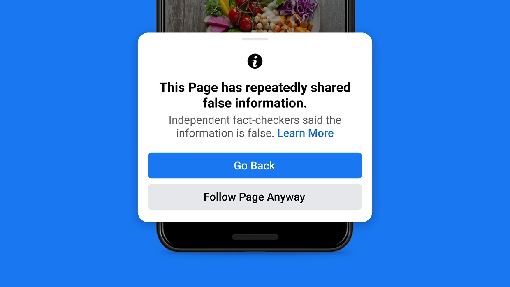
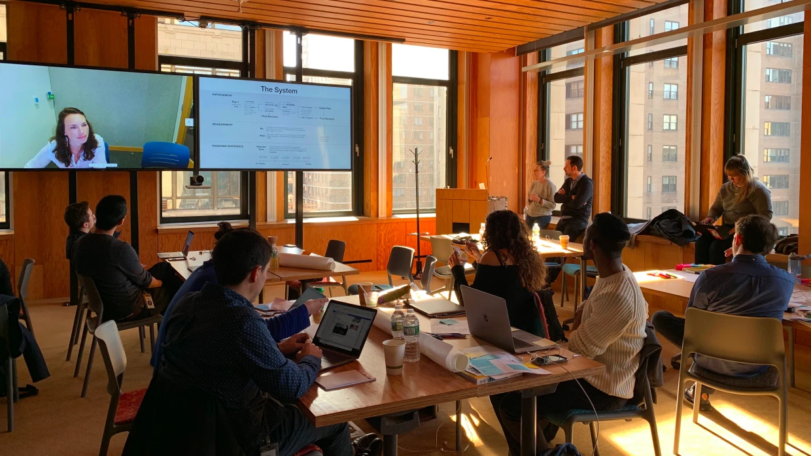
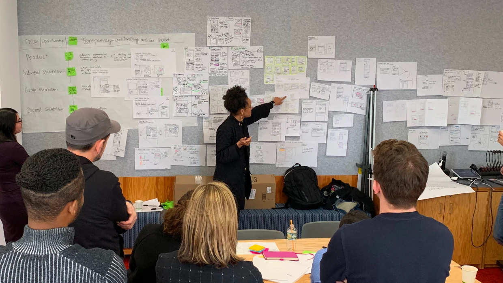
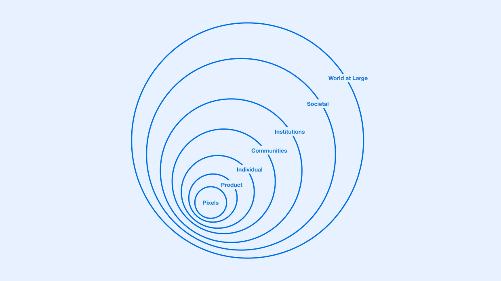
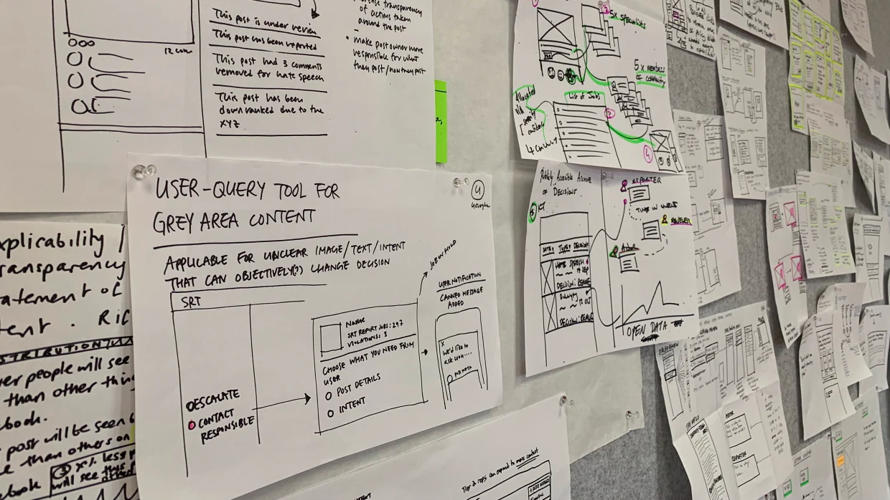
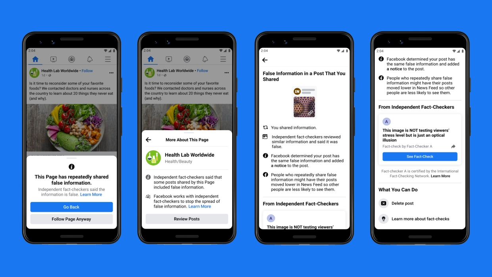
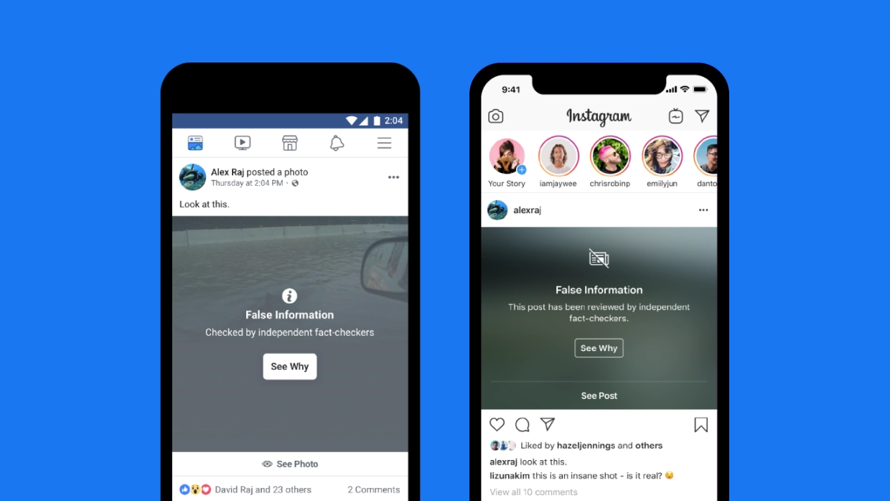
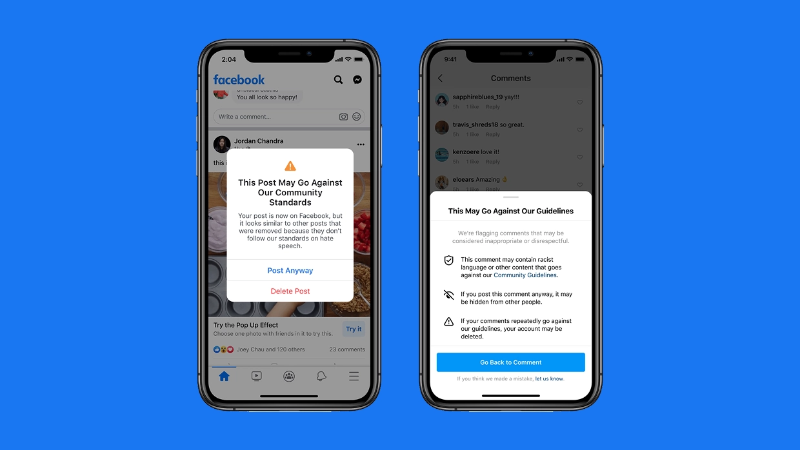

Meta • Design Manager
Reducing harm and misinformation for billions of people

In 2019, as concerns around misinformation and harmful content accelerated, Facebook faced a fundamental shift. Integrity was no longer something that could be addressed through isolated product features. It had become a system level challenge.
The problem was compounded by fragmentation across teams. Different parts of the organisation were building solutions in parallel, but without a shared model for how content flows, how behaviour evolves, or where intervention would be most effective. This limited the ability to respond in a coordinated and scalable way.

As a Design Manager on the Community Integrity team, I managed a team of five designers working across Facebook and in close partnership with Instagram and WhatsApp. I collaborated cross functionally with engineering, product, research, data science, policy, and Community Operations to address integrity challenges spanning content, behaviour, and societal impact.
To address this, I led a series of cross company workshops in New York, bringing together design and research leaders from across Facebook, Instagram, and WhatsApp. In parallel, I organised a knowledge sharing session with product and design leads from peer companies including Reddit, Twitter, and Pinterest, creating space to compare approaches and align on emerging integrity challenges at an industry level.
The goal was to move beyond isolated solutions and establish a shared way to define and approach integrity problems at scale.

To support this, I introduced a framework called Pixels to Planets. It reframes how teams think about design problems, helping them zoom out from interface level decisions to understand how those decisions propagate through product systems, user behaviour, group dynamics, and ultimately broader societal outcomes.

This gave teams a way to move beyond pixel level optimisation, connect local decisions to global impact, and reason more clearly about where to intervene in the system.
Over time, the framework was adopted across Facebook, Instagram, and WhatsApp, helping teams reframe problems more holistically, identify intervention points beyond the interface, and consider second and third order effects of their work.

User research and data were central throughout. A key focus was understanding how people interpret and engage with borderline content, and how design, distribution, and context influence behaviour at scale. This surfaced the limitations of binary moderation models, particularly for content that did not clearly violate policy but still had the potential to mislead or cause harm.
Grounded in this insight, the work helped shape a more nuanced system of interventions aligned with what became the Remove Reduce Inform model:
- Remove clear violations
- Reduce the distribution of borderline content
- Inform users through context and transparency
Rather than a single moderation decision, this reframed integrity as a coordinated set of interventions across the system.
This thinking began to materialise across products. Content identified as misleading was increasingly labelled rather than removed, with users given context and friction before engaging or sharing. Distribution systems were adjusted to limit the spread of borderline content, while repeated behaviour triggered escalating interventions at the account level, shifting enforcement from individual posts to patterns of activity.

Alongside this, I led service design sessions focused on the reporting and review ecosystem, mapping the end to end experience across reporters, posters, policy, engineering, data, and Community Operations. This exposed gaps in coordination, tooling, and feedback loops, informing improvements to reporting flows, moderation systems, and cross functional processes.
This work also intersected with advances in machine learning, using data driven signals to support earlier detection, triage, and distribution control of harmful content, shifting the system from reactive moderation toward more proactive and scalable intervention.
Together, this work established a more coordinated, system level approach to integrity, connecting product decisions, operational workflows, and technology into a cohesive model operating at global scale. This shift enabled more effective intervention across the lifecycle of content and behaviour, directly contributing to measurable improvements in detection, enforcement, and reduction of harm.


Outcomes
- Established Pixels to Planets as a shared framework across Facebook, Instagram, and WhatsApp
- Shifted teams from feature level solutions to system level interventions
- Contributed to adoption of Remove Reduce Inform as a core integrity model
- Introduced graduated interventions including labelling, downranking, contextualisation, and account level enforcement
- Improved end to end reporting and moderation workflows across product, policy, and operations
- Contributed to integrity systems operating at global scale:
- 95%+ proactive detection in key harm areas
- 2.2B fake accounts removed in a single quarter
- ~40–60% reduction in harmful content reach